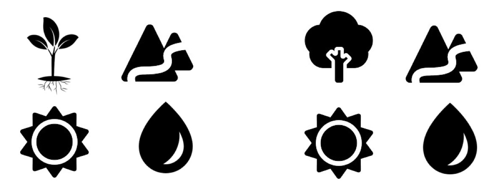
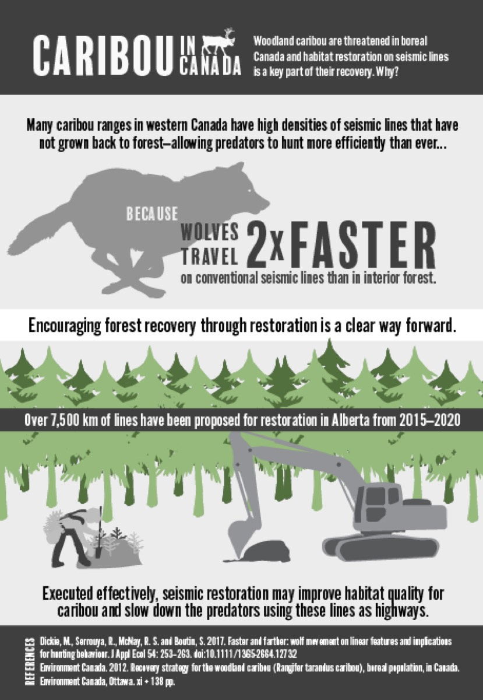
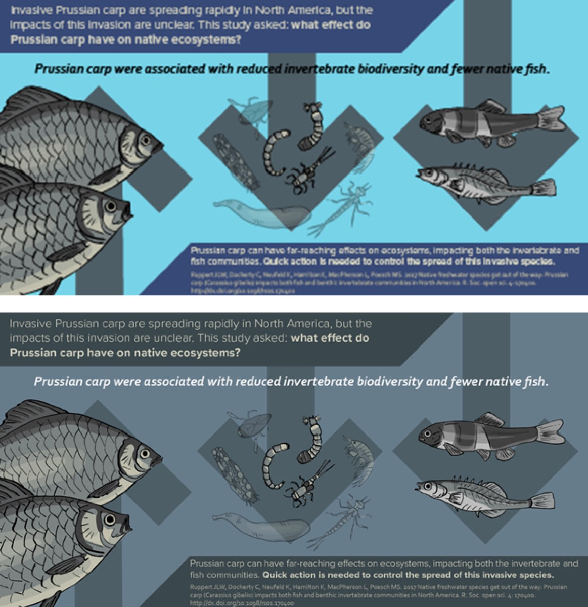

Infographics are a great way to make your content stand out against the rest. The power of visual tools is borne out by research: tweets about new research that include a infographic result in 8.4 times more retweets and 2.7 times more article visits. Beyond making your message more exciting, infographics also make your message more accessible.
If you want your research to be shared as much as possible, infographics are an excellent option, but how do you go about making one? Can you make one even if you can’t draw?
These questions formed the theme of a workshop we presented last month to graduate students in the NSERC CREATE Environmental Innovation program.
Communication skills developing during grad school can be key to a student’s future success. Whether conducting research as an academic, consulting in the private sector, drafting policy with an NGO or government agency, or something else (like becoming a science communicator!) being an effective communicator is critical. A researcher could be conducting highly important work in their field, but if no one understands their message, it won’t have much impact in the end.
While graduate students have many opportunities to practice their communication skills (presenting at conferences, making posters, writing papers, etc.), specific instruction on how to communicate creatively to broader audiences is often missing. At Fuse, we take communication seriously, so we hoped to fill the gap by sharing some of our tips for visual communication.
Through the workshop, participants worked towards building a draft of their own infographic. We first covered how to identify their target audience and tailor their message accordingly. Then in the second half of the workshop, we covered how to use graphics to tell a story visually.
Over the course of three hours, we had an active session with great discussions and interactive games. we designed an active workshop not just to make it fun (though that’s a good enough reason on its own) but to help make the messages stick. After completing the workshop, students left with a draft of their own infographic.
The skills covered in the workshop are applicable to much more than infographics. Presentations and poster sessions are a frequent part of research, and too often we forget that these are visual media.
The basic principles for creating a good infographic are the same for making effective posters or presentations:
Know your audience
Who is your target audience? The answer to this question will affect what part of your message you choose to highlight, as well as the language you use. If your target audience is “the public,” are there any specific groups you wish to reach in particular? (e.g. landowners, anglers, etc.)
Avoid jargon
Use plain language to describe your message. Jargon is alienating and frustrating to those who don’t have the necessary background. Even if your audience is made up of academics, they may not know the specific terms associated with your research topic. At a conference, it’s always refreshing to see a presentation or poster that uses plain language.
Prioritize the “meat” of your message
Emphasize the following: why should we care, what was the main finding, and what does this mean? Methods and extra background info are secondary. Statistics are tertiary.
Less text, more pictures
Tell your story with graphics rather than text. Reading lots of text is exhausting and it makes concepts harder to visualize. Using pictures will make your message easier to understand and more memorable.
Once you have those basics covered, its time to start illustrating.
5 Steps for making your friends think you’re an artist (even if you’re not):
1. Use a grid
This is so simple but so important. Ensuring that your text boxes and graphics line up properly will make your infographic look polished. Most beginner-level software options like Powerpoint will help you by “snapping” your text boxes and images in place. If you want to take your game to the next level, the Adobe Creative Suite will give you all the tools you need.
2. Use icons that are the same style
We’ve all seen Powerpoint slides or posters with random clipart that feels out of place. Ensuring that your graphics have the same style will make sure that everything feels cohesive. Resist the urge to mix-and-match icons from different sources. You can find free icon sets at freepik.com, flaticon.com, and roundicons.com (remember to credit the source!)

Which icon set looks most harmonious to you? Note how the more delicate plant stands out from the three heavy, chunky icons. The tree icon on the right feels like it belongs with its chunky style and distinct negative space (the white line around the trunk). Icons from freepik.
3. Silhouettes look great and are the easiest style to match
Silhouettes are also easy to make yourself. Need an icon for a piece of field equipment you frequently use? Take a picture of it and then trace over the image to make your simple silhouette.

The simple flat silhouette style ensures that the wolf, trees, and machinery look crisp and modern.
4. Choose a colour palette and stick to it
You can find lots of great palettes at color.adobe.com (go to “Explore” and you can find nice palettes by searching key words. Mousing over the colour swatches will give you the RGB codes for each colour in the palette). A harmonious colour palette is one of the big things that will make your infographic look professional.

The same infographic, one with randomly picked blue backgrounds, one with blues that are part of the same colour palette.
5. Use fonts of the same font family
A font family includes the bold, semibold, italic, light, etc. versions of a single font. Sticking to the same font family is the safest way to make your infographic text look cohesive. You can download free fonts from fonts.google.com (I like Open Sans as a good all-around font. If you use a downloaded font in something like a Powerpoint presentation, make sure to embed the font with the file.)
Putting it Together:
So you’re ready to make your infographic, but what software should you use to put it together? I’ve listed some options below for different skill levels.
Piktochart.com (for the total beginner: easy drag-and-drop interface)
Canva.com (for the total beginner: easy drag-and-drop interface)
Powerpoint (beginner: familiar but slow. Follow instructions here to export slides into high quality images; the default setting only exports in low resolution)
Gimp and Inkscape (intermediate: a free, open source alternative to Photoshop and Illustrator)
Adobe Suite (Photoshop, Illustrator, InDesign, etc. The best-of-the-best, but will cost you. The student subscription is about $20 a month for the full Suite, but check your institution)
Follow these simple ideas and you will find yourself quickly emerging as an infographic star! Keep us posted on how it goes, and share your products with us: @fuseknowledge and @kate_sciart.
Written by Kate Broadley, an Ecologist and Science Communicator with Fuse Consulting Ltd. Are you looking for an infographics workshop to train your staff or colleagues? Reach out to us and lets talk: matthew@fuseconsulting.ca